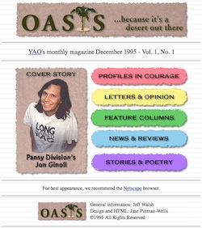

How do you measure 19 years?
I feel compelled to write some reflections on the occasion of Oasis shutting down after 19 years, but it’s hard to find the right words.
I’m 46 now, and 27 when I started this site in 1995, so it seems like there should be some profound summation or insightful conclusion, especially when you consider that this site launched the same year as Amazon, and three years before Google.
But that’s probably why the right sentiment eludes me. The world has changed so much since then, and so much for the better, that Oasis no longer having a major role to play is cause for celebration. Not sadness.
If you ever read the early Oasis content, it has a naivety that hasn’t existed for a long time. I would interview people who were out at college, or openly gay online, and reading it now, you keep looking for clues building up to some big M. Night Shyamalan twist, but there isn’t one. That was new and inspirational at the time. They went to college, came out, and lived openly. That was it.
The strangest thing about Oasis is that it is about the power of journaling and using those words to see how you have grown, evolved, and changed, and forming a community around those words, but from day one, I was always outside of the site. I was older and out when I started it, in both my personal and professional life, and that has never been an issue in my life for the past 19 years. Ironically, I’ve also never maintained a journal on here chronicling my own life.
Because of that disconnect, I used to have a difficult time processing when people would write to thank me for creating the site because of how much it had helped them, often thanking me in their 20s for supporting them when they were teenagers. These e-mails would just sit in my in-box for as long as I could get away with ignoring them.
I would eventually reply, and the replies would read OK, but I had a real block about accepting my role as having created this thing that ended up being so much larger than myself. I felt they had done all the work, wrote the words, shared their stories…
So, a decade into Oasis, I was having lunch with Anthony Rapp while he was on book tour in San Francisco, and I figured he might have some unique insight here. It wasn’t an interview. We were just hanging out. Rent opened on Broadway a year after Oasis started, and we were just talking about life in general, as well as the impact of my site and his show a decade later.
Every time I’ve been around him over the years (which is often at a show of his, to be fair), someone often approaches him to talk about Rent, and how much it changed their life, and he is always so present and gracious with people in that moment, and lets them have that experience of communal grace, that I wanted to sort out how to get to that same place. He had a unique experience that paralleled my own in some way, so I figured I’d tell him my problem.
So, I told him about my folder of e-mails from Oasis members that I don’t reply to, with all of them thanking me.
He seemed surprised by my admission, but didn't hesitate a second before replying. He was adamant that I had to accept their words of praise inside of me, own them, and that it was "unacceptable" to not take credit for it. Either he said unacceptable a few times, or it kept echoing in my head as we continued to talk for about three hours in the restaurant.
We parted ways after lunch, although I was attending an acoustic concert he was doing later that night. But all day, I couldn't shake the image of Anthony saying it was "unacceptable," and continued to think about it for the rest of the weekend.
The following Tuesday, I found an interview online that Anthony had done when he was in town promoting his book. As I read it, I thought once again of him saying "unacceptable.”
So, I made a decision in that moment. I was going to own up to my role in Oasis, and whenever the next e-mail came in, I was going to immediately write back and accept their praises and thanks without question. It is a privilege to have people crediting you for changing their life for the better, and "unacceptable" to do otherwise.
In that moment, my phone rings and a previous contributor to Oasis, who started reading it in his teens and was now a socially active college senior about to enter the larger world, called me for no other reason than to thank me for Oasis.
I need to point out that this isn't one of these stories made too perfect through time editing. It happened three days after my lunch with Anthony, and while I was reading his interview and thinking about what he said about Oasis. The interview was still on my monitor during the call and I hadn't yet finished reading. (Sorry, but I'm a natural skeptic of serendipitous stories, so I had to properly vet this and add my disclaimers, lest anyone debate my fabulist leanings, which do exist otherwise).
And, the strange thing was, there was no other reason for the call. He told me how he had become very active on his campus, excelled at school, and that both Oasis and I played a role in him being successful and comfortable in his own skin as he was about to enter the world.
So, when the universe decides to send you a message, it doesn't really go for subtlety. He and I had never talked on the phone before the call, or since, so there wasn't much catching up, and it was brief. I didn't tell him about the strange timing of his call, either.
I just thanked him repeatedly. For calling. For his beautiful words. For giving me even a hint of credit for the man he had become. I wanted to make sure he was well aware after we hung up that I heard him, appreciated him, loved him, and that our lives intersected, leaving us both better off as a result.
Since this exchange 8 years ago, my connection to Oasis hasn't wavered. A switch flipped in the space of those four days in 2006, and I've become so much more appreciative of the site, the people on it, and the magic that can and does exist here.
I still think that the members have been responsible for the success of the site, and the magic that somehow struck inside this domain again and again over the years.
But I also try to flip that around now and accept that some weird thing I created on a lark in 1995 had an impact. People used it as a catalyst to change their lives, to nudge them out of the closet, to start accepting and loving themselves, to making their first gay friends online… we even had a few first loves that started on Oasis.
I ended up as an ACLU plaintiff to support LGBT youth rights against state laws trying to “protect children” by silencing safe spaces such as this one. And, I didn’t think much of it at the time, but back in 1998, I was approached by someone to help them create a new website that was connected to HBO showing a short film called Trevor. At this point, I barely remember if the version I created was used, but I did randomly create the first attempt at a website for the Trevor Project, not knowing that it would become as massive as it is today.
It was always hard to grasp the scope of Oasis. Upon launch, it had a global audience and showed the power of the Internet to erase geographic borders. It also showed how universal our experiences are, despite any cultural differences.
One of the stories that always stands out, though there are so many, was from Eric Wahl. It was probably because it was the first story that truly hit me as far as the impact Oasis was having.
In 1995, he was a teacher in Ankara, Turkey, who found one of his 16-year-old students in the computer lab after hours. The student was frantically trying to turn off the monitor as Wahl approached him, but he was unable to.
I tried to get him to calm down -- he was nearly crying, apologizing for being in the lab, insisting he had made a mistake. I would have normally let this pass. Boys his age at our school were always into something they shouldn't have been -- that's sixteen year-olds for you. But when this boy, one of my better students, painfully shy but not unpopular, began whimpering, "I'm sorry, Sir. I'm sorry, Sir," I knew something was up that was, perhaps, more weighty than downloading Gillian Anderson photos again.
When I walked toward the computer he had been using, this student (I'll call him Emre, although that isn't his name) began some really hard-core sobbing. Now, in Turkey, it's not uncommon for students of either sex to begin crying at the drop of a dime. My students were great at this, and usually it was calculated (about the same time as they got caught "accidentally" cheating, or if they had just flunked a test on their own merits). I had to learn to discern between the sincere sobbers and the talented hucksters.
Emre, tall and gangly with black hair and a sweet smile, was always very congenial to everyone. He never got in fights, always did his work -- he managed the delicate art of being a faculty favorite without earning the student body's ire as a teachers' pet. Now, however, something was decidedly different. His friendly but cool demeanor had crumbled.
As I approached the computer monitor, Emre, still pleading he was sorry as he backed up against the far wall, raised his arms up and over his head, elbows at his face. He expected me to begin hitting him. On the screen of our laboratory computer that freezing, gray Ankara day in December, I discovered something called Oasis.
I didn't know what to do. I tried to quiet Emre. I was actually afraid to touch him -- what could people say then? I did manage to get him to sit down, breathe slowly, etc. I assured him I was not going to strike him. At our school it was not uncommon to see teachers as well as administrators push, smack, and/or punch students for all manner of infractions. It was an unwritten, but accepted policy and much bigger than me and my mouth. Whether it was professional of me or not, I turned a blind eye to the teachings of my professors and promised the student I was there for him and would not betray his privacy. I still had no idea if he was looking at Oasis out of need, curiosity, or what. But before I could ask him anything, he asked me a question. "How can people be gay?"
The question struck me as odd at first. "The same way people can be blond, I think," I said. "Can it ever change?" he asked. "Well, I can dye my hair red and say I'm a redhead, and I'll look like one, but I'll still be blond, really. Right?" And then he told me, in Turkish, "I don't want to be gay."
What do you do? I became a teacher for many reasons, not the least of which is because I love kids. I remember a lot of lousy, confused days in my own school experiences. I never said anything to my teachers. And here we were in this country where at least 98% of the population are Muslim, and this great kid with all kinds of talents is so ashamed of himself that he feels like he shouldn't exist. Like I have some kind of right to hit him because of this. It breaks my heart thinking about it even now.
I never told anyone about our meeting in the computer lab that afternoon. Sometimes Emre and I talked after school -- about generic stuff, mostly. What had we seen on MTV Europe? Did I have any more pictures from home? That kind of stuff. I made sure he knew I didn't think then, nor would I ever, that he was anything less than a great kid, because, of course, he is.
His parents have mapped out his future exactly as they want it to be. He'll be an airline pilot if they have their way, and I imagine they will. So many parents mistake control for love. But he'll be a pilot who plays guitar better than anyone I have ever met. He'll still be a kind person, reserved, polite. But will he ever come to see he isn't a bad person? I think about this a lot. That's why I let him in the computer lab during my office hour.
It was hard to imagine this site, born on a computer in my bedroom in Pennsylvania, was reaching people around the globe. While Emre's story was uplifting, it reinforced how powerful the site could be, and how great the need. It also made me glad we always used site design that didn't scream gay. We have always been a rainbow-free zone, knowing part of our audience would be reading us in secret, and possibly in public.
There have been a lot of happy accidents with Oasis and one of the best has been that we never separated our content along gender or sexuality lines. There is no female discussion forum, or a bisexuals-only message board.
And because of that, nothing made me happier than a teenaged girl posting a story about someone she has a crush on in high school, and her first two comments are from teenaged boys saying they've been in the same boat and giving her advice. That little slice of utopia of ours has given me more optimism than many other things in life, and it is frightening to think that if one day we had made separate gay and lesbian message boards it would have never happened.
And, prior to people self-publishing at will, we always had a bulletproof acceptance policy for submissions: if you sent it, we ran it.
One time, a boy in his mid-teens wrote a small poem to put on Oasis. Now, I'm no huge poetry fan, but I still feel comfortable saying most of the poetry on our site wouldn't set the literary world on fire. They were often written with their straight friends as the intended audience, making the final line along the lines of "Because I'm gay" not very shocking.
So, this boy submitted his small poem. It was the only thing he ever submitted. I didn't think twice about it, if I ever thought once about it. About a month or two later, he wrote me back saying he had come out to his family and things were going well. He wanted to thank me, because knowing his poem was up on a public site gave him the courage to do it.
Personally, I think he deserved all the credit for coming out, despite us letting him have two kilobytes on our server. But, the lesson here confirmed we would always publish everything people sent us. There was no way to gauge the impact the most innocuous poem might have in the real world.
But with the advent of Facebook, YouTube, Twitter, and Tumblr, the need for a site like Oasis has disappeared (as our traffic has shown). Our original tagline “…because it’s a desert out there” is no longer accurate. There may be new difficulties related to growing up LGBT in this new world, but none that Oasis is in any position to help solve.
So I am just glad that people have been able to benefit from this thing I just happened to start 19 years ago. There are friends in my life that I met through this site, some from so long ago that I even forget this is how we met anymore. And if you were ever a member on here, I am always interested to know how you are getting on with your life, so feel free to stay in contact (jeff@jeffwalsh.com) even when the site goes static soon.
And, to stay true to Anthony’s lesson, I want to thank everyone who ever wrote, read, or contributed to Oasis in any way over the years. I don’t know that I will ever really know the reach and impact this site has had, but it is profoundly touching to put something out into the world and to know it has affected people’s lives in such a positive way.
And this site has also changed my own life for the better, because all of you have been a part of it.
Thank you, again.
Jeff